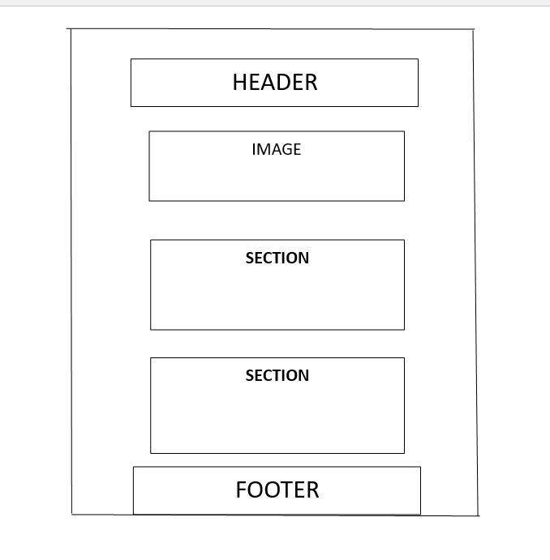
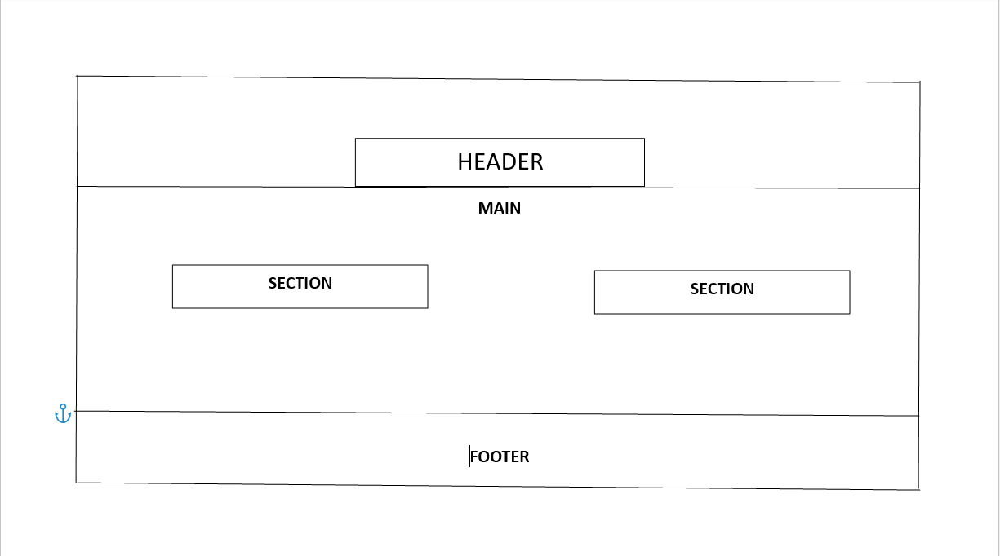

Fifth Version VFX Studio – Site Plan
Site Name
Fifth Version VFX Studio
I chose this name because it represents the creative brand I’m building a modern visual effects
and creative media studio. The name “Fifth Version” symbolizes constant improvement, evolution,
and pushing creativity beyond limits.
(Optional Domain): version5studio.com
Site Purpose
The purpose of this website is to showcase the services, skills, and creative projects of
Fifth Version VFX Studio. The site will include a portfolio of VFX shots, services offered
(VFX, compositing, CGI, and video editing), behind the scenes content, an about page, and
a contact page for clients or collaborators to reach out.
Scenarios
- “I want to hire someone to do VFX for my short film — what services does Fifth Version offer?”
- “Can I see examples of previous VFX work, breakdowns, or editing samples?”
- “How do I contact Fifth Version for a project or collaboration?”
Color Scheme
The site will use the following color scheme:
- Primary Color: #0D0D0D (Almost Black) — used for background, header, and hero section.
- Secondary Color: #00A3FF (Neon Blue) — used for buttons, accents, and links.
- Highlight Color: #FFFFFF (White) — used for text and clean minimal design.
The color scheme will be applied consistently throughout the site, including this document.
Typography
- Heading Font: Montserrat — used for titles, section headers, and navigation.
- Body Font: Roboto — used for paragraphs, descriptions, and content text.
- Accent Font (optional): Orbitron — used for futuristic VFX-style headings.
These fonts match the modern, cinematic style of a VFX studio.
Wireframes
Mobile View (Sketch)

Desktop View (Sketch)
